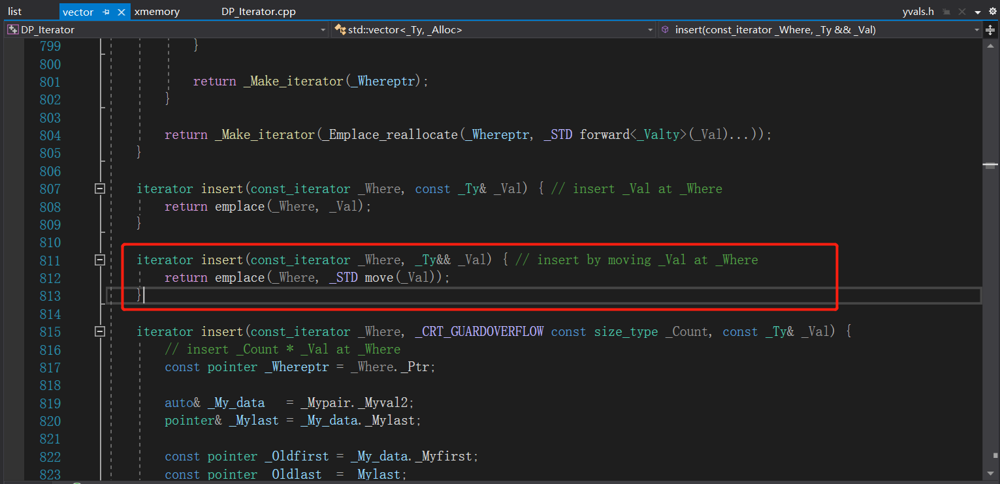
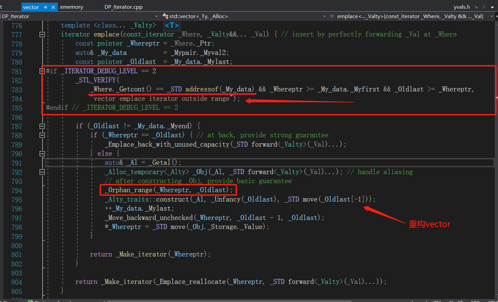
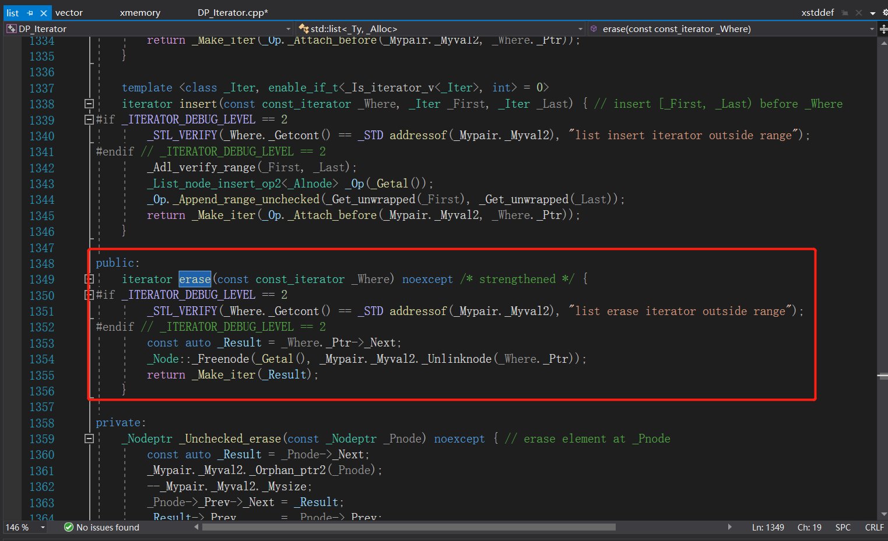

# 迭代器失效问题
概述：面了一家很爱的公司，被问为什么迭代器会失效，当时没回答好呜呜呜，然后好好补了一下，做个总结。
# 迭代器失效问题
# vector 迭代器失效，代码如下：
1 | int main() |
代码的测试中可以看出，vector.erase 和 vector.insert 这两个 api 都是可以破坏迭代器的，为什么呢？
原因当然得去看 insert 和 erase 在底层到底是怎么实现的。
首先看 insert 的实现（erase 也是一个道理）




不难发现，insert 实际上就是在用 emplace 函数在迭代器的位置插入一个 val，emplace 的实现实际上就是先判断一下这个迭代器是否还有效，如果有效就往下执行，否则 crash。怎么判断的呢？进去看看_Getcont 函数的代码发现，就是这个 **_Myproxy 是否为空，如果为空，就返回空指针，然后就 crash 了 **。那我要怎么改变这个_Myproxy 呢？咱再往下看，如果迭代器有效，我们最终一定会执行_Orphan_range 函数，函数体里面显然是会把我们的_Myproxy 置空的。如此一来，我们如果不更新这个迭代器，那就只能等着 crash 了。
# list 迭代器失效，代码如下：
1 | int main() |
不难发现，list 的限制比 vector 少了一点，就是 **insert 并不会使迭代器失效，但 erase 仍然是会的。** 于是咱就来看看 list.erase api 的代码吧，跟 vector 的不太一样。



list 是怎么让 Getcont 返回空指针的，这个显然是跟 vector 不同的，因为 vector 在内存中本来就是连续的内存空间，所以删除的时候，需要把后面的元素全部移上来，但 list 不需要。**list 是需要把当前节点的上一个节点和下一个节点连接起来，再释放掉当前节点的空间就行了。** 那这个 Getcont 返回空指针有什么关系呢？当然有。我们需要看看他是怎么 Getcont 的，一层一层找下去发现，_Where 这个变量的类型实际上是_List_unchecked_const_iterator，而且继承于_Base，而_Base 默认是_Iterator_base0, 于是我们进__Iterator_base0 里面里面，果然就找到了_Getcont 函数，也就是说我们这块空间被清掉之后，那_Base 就会被重置_Iterator_base0，于是我们的迭代器就失效了。
总结：可以看出，C++ 标准库中其实是直接把调用过 insert 或 erase 的 vector 迭代器强制失效的，对于 list 迭代器则只是让 erase 强制失效了。为什么要这么做呢？其实道理很简单，因为我们的 insert 和 erase api 都有返回迭代器，如果你还需要继续用，直接把返回值赋值给失效的迭代器就可以了，根本没有必要兜几个大弯来给你把原本失效的迭代器重新弄生效，对吧。